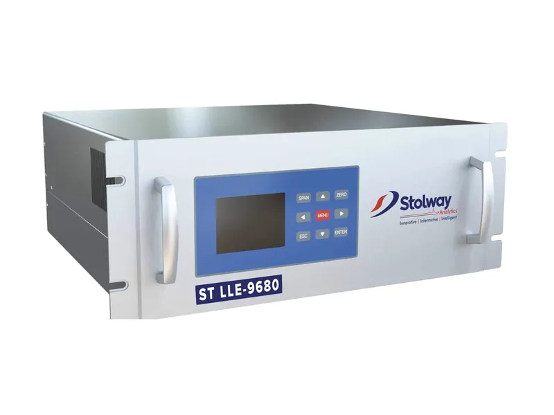

ST Line Laser H₂O / H₂S / SO₂ Analyser
Line laser analysers using OF-CEAS spectroscopy for ppb-level H₂O, H₂S and SO₂ measurement in process gas, in Ex p and Ex d versions for hazardous areas.
- Detection principle
- OF-CEAS
- Limit of detection
- 2 ppb to 100 ppm
- Response time
- < 10 s
- Hazardous area
- Ex p and Ex d versions
Overview
Product Overview
System components
The Stolway Line Laser analysers pump process samples at low pressure through tubing into an optical measurement cell. A vacuum pump guarantees a steady flow while maintaining low pressure, which improves speed and precision.
Inside the cavity the gas interacts with a laser beam and absorbs specific wavelengths; this absorbance is measured to determine the composition. The continuous-flow technology eliminates residue build-up, giving real-time, representative analysis with little delay or interference.
Gas sampling
Process gas is drawn under controlled vacuum through the resonant optical cell, with dwell times optimised to under 100 ms, eliminating memory effects.
Laser locking
A frequency-stabilised IR laser couples with a high-finesse optical cavity via optical feedback.
Enhanced absorption
Multi-pass light–gas interaction in the cavity dramatically increases the effective path length.
Quantitative analysis
Target gases absorb specific wavelengths; the absorption spectra are fitted to reference databases for precise concentration.
At A Glance
Features & Applications
Key features
- OF-CEAS (Optical Feedback Cavity-Enhanced Absorption Spectroscopy) for ppb-level detection with molecular specificity.
- Eliminates cross-interference, even in complex gas matrices.
- Low-pressure sampling (LPS) minimises interference and improves response time; prevents adsorption losses, condensation and flow hysteresis.
- Fast response enables closed-loop control for emissions, combustion and scrubber optimisation.
- Solid-state laser and optical design with no consumables such as electrochemical cells or drying cartridges.
- Auto-referencing calibration reduces drift and downtime.
- IECEx-certified options for hazardous (Zone 1/2) areas.
- Ethernet, Modbus and RS485 interfaces for simple connection to control systems.
Applications
- Natural gas processing
- Sour gas treatment
- Natural gas quality control
- Dryers
- Refineries & chemical plants
- Wastewater treatment
- Confined space monitoring
Industries
- Oil & Gas
- Refineries & Chemical Plants
- Industrial Safety & Occupational Health
Specification
Technical Specification
Typical values. Ask us for the datasheet for your configuration.
| Physical dimensions (HxWxD) | 807 x 600 x 350 mm (Ex p), 720 x 560 x 350 mm (Ex d) |
|---|---|
| Weight | 70 kg approx. (Ex p), 100 kg approx. (Ex d) |
| Approvals and certifications | Ex p: Ex pxb IIC T4 Gb (−20 °C ≤ Ta ≤ +60 °C)Ex d: Ex db IIB+H2 T6 Gb (−20 °C ≤ Ta ≤ +50 °C), Ex db IIB+H2 T5 Gb (−20 °C ≤ Ta ≤ +60 °C) |
| Max. ambient temperature | −20 to 60 °C |
| Ambient humidity | 10–90% RH, non-condensing |
| Degree of protection | IP65 stainless steel 316L housing (Ex p), IP66 (Ex d) |
| Measured gases | H₂S, H₂O |
| Typical measurement ranges | H₂S: 0–1 ppm / 0–5000 ppmH₂O: 0–1 ppm / 0–100 ppmSO₂: 0–2000 ppm |
| Linearity | < 1% range, R² > 0.999 |
| Repeatability | 3 × LOD or ±0.5% relative |
| Limit of detection (LOD) | Min. 2 ppb to max. 100 ppm |
| Response time | < 10 s |
| Drift zero/span | Negligible (self-calibrating, no span gases required) |
| Power requirement | 110–230 VAC, 50/60 Hz, 200–300 W |
| Communication and data output | Ethernet, Modbus (TCP/IP, RS485, RS232), analog I/O, digital I/O |
| Sample inlet pressure | 1 atm ± 10 mbar at sampling point |
| Sample flow rate | 50 to 500 cc/min |
Hazardous Areas
Certification & Ratings
- IECEx-certified options for hazardous (Zone 1/2) areas
- Ex p: Ex pxb IIC T4 Gb (−20 °C ≤ Ta ≤ +60 °C)
- Ex d: Ex db IIB+H2 T6 Gb (−20 °C ≤ Ta ≤ +50 °C), Ex db IIB+H2 T5 Gb (−20 °C ≤ Ta ≤ +60 °C)
- IP65 stainless steel 316L housing (Ex p), IP66 (Ex d)
Not sure it fits your application?
Tell us what you need to measure, the ranges, the process conditions and the hazardous area classification. We diagnose your requirements first, then tailor the solution.
Explore More
Related Products

ST LLE-9680 Laser Gas Analyser
A 19-inch rack-mounted tunable diode laser (TDLAS) analyser measuring 1 to 5 gases simultaneously for at-line industrial analysis and environmental monitoring.
View productTunable Filter Spectroscopy Analyser
Light-absorption spectroscopy analyser for real-time hydrocarbon composition of natural gas, LNG, LPG, BOG and biogas, with BTU, Wobbe index and density outputs.
View product
Smart Sampling System (SSS)
Solves persistent plugging problems in CEMS applications by continuously delivering stack sample gas to any CEMS analyser, including severe-service applications in hazardous area locations.
View product